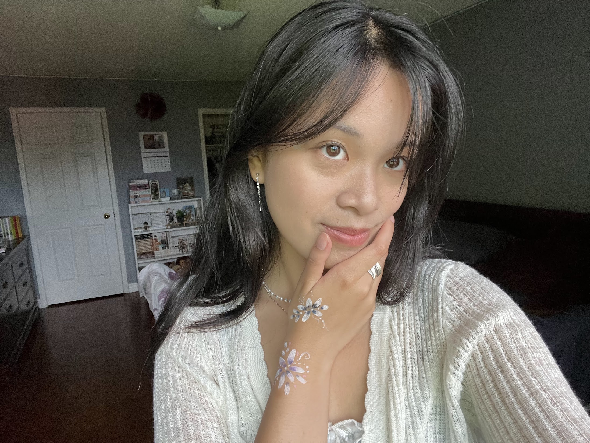

Hi! I'm Emily Hu :D
I’ve always loved to draw and create things! My current hobbies include crochet, needle-felting, origami, face-painting, and so much more! But what motivates me the most about my crafts, is making things for other people.
Check out some of my past creations here,
and I hope I can create something for YOU too <3